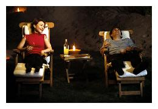
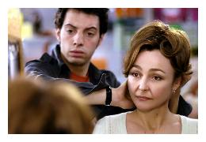
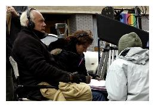
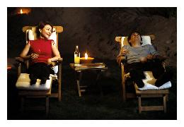
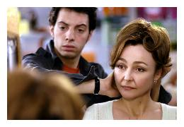
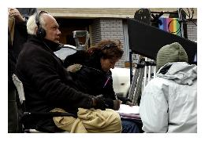
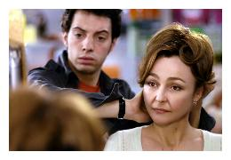
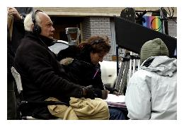
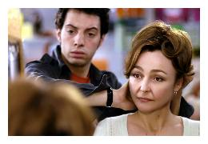
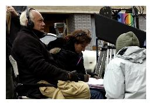

Le site web a maintenant plus de 5 ans et vous êtes de plus en plus nombreux à le visiter.
Aujourd'hui il fait peau neuve grâce à quelques bénévoles et nous espérons qu'il sera plus clair et agréable.
Merci aux étudiants du BTS SIO de Poitiers pour ce travail !!!
Vous y trouverez, bien sûr les programmes et les horaires des films, leur synopsis, les prévisions et puis, quand cela sera possible des anecdotes sur les tournages et les acteurs ainsi que des interviews que vous trouverez à la suite du synopsis.
Si nous avons des avant-premières, vous serez les premiers prévenus !
Alors bonne navigation, et n'hésitez surtout pas à nous donner vos impressions en cliquant sur "e-mail" dans la rubrique contact !
 





 



.... et vous retrouve dès mercredi pour vous présenter Odette Toulemonde, une comédie avec Catherine Frot et Albert Dupontel. On reparle à nouveau de la critique puisque celle-ci éreinte le dernier livre d'un écrivain alors qu'il fait rêver et aide à vivre Odette !... A l'affiche également cette semaine, La vie des autres, un film allemand passionnant, politico-policier, qui connaît un bouche à oreille formidable. Synopsis, photos et anecdotes en cliquant sur l'affiche. (Sources : dossiers de presse et Allo-ciné). Pour les horaires, double-cliquez sur "Programmes". Pour connaître les films à venir dans les prochaines semaines, consultez la rubrique "Prochainement" qui nous emmène jusqu'au début avril. Consultez également la rubrique "Histoire de Cinéplus", vous y trouverez une mise à jour sur la fréquentation de la salle et l'importance accordée au cinéma "Art & essai", Cinéplus a ainsi reçu son deuxième agrément.
Cinéma Cineplus - 3 rue des frères Lumière - 69000 LYON
Tél : 04 11 22 33 44